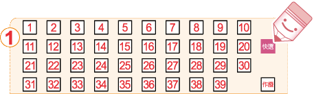
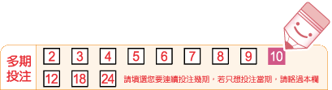

| 獎項 | 中獎方式 | 中獎方式圖示 |
| 頭獎 | 與當期五個中獎號碼完全相同者 | |
| 貳獎 | 對中當期獎號之其中任四碼 | |
| 參獎 | 對中當期獎號之其中任三碼 | |
| 肆獎 | 對中當期獎號之其中任二碼 |
| 獎項 | 頭獎 | 貳獎 | 參獎 | 肆獎 |
| 單注獎金 | $8,000,000 | $20,000 | $300 | $50 |
在選號區中，自行從01~39的號碼中填選5個號碼進行投注。

在選號區中，劃記「快選」，投注機將隨機產生一組5個號碼。

您也可以在選號區中選擇1~4個號碼，並劃記「快選」，投注機將隨機為你選出剩下的號碼，產生一組5個號碼。
以下圖為例，如果您只選擇3、16、18、37
等四個號碼，並劃記「快選」，剩下一個號碼將由投注機隨機快選產生。

您可以在選號區中選擇6~16個號碼進行投注，系統將就選號單上的選號排列出所有可能的號碼組合。
例如您選擇用1、7、29、30、35、39等六個號碼進行投注，
則投注機所排列出的所有號碼組合將為：
第一注：1、7、29、30、35
第二注：1、7、29、30、39
第三注：1、7、29、35、39
第四注：1、7、30、35、39
第五注：1、29、30、35、39
第六注：7、29、30、35、39
系統組合所產生的總注數和總投注金額將因您所選擇的號碼數量而異。請參見下表：
|
|
您可以在選號區中選擇4個號碼進行投注，系統將就您的選號和剩下的35個號碼，自動進行配對，組合出35注選號。
如果您選擇用1、2、3、4等四個號碼進行投注，
則投注機所排列出的所有號碼組合將為：
第一注：1、2、3、4、5
第二注：1、2、3、4、6
第三注：1、2、3、4、7
：
：
第三十四注：1、2、3、4、38
第三十五注：1、2、3、4、39
* 注意，每次系統配號將固定產生35注，投注金額固定為新臺幣1,750元。
您可以選擇就您的投注內容連續投注2~24期（含當期），您的投注號碼在您所選擇的期數內皆可對獎，惟在多期投注期間不得中途要求退/換彩券；如您在多期投注期間內對中任一期的獎項，可直接至任一投注站或中國信託商業銀行(股)公司指定兌獎處兌獎，不需等到最後一期開獎結束。兌獎時，投注站或中國信託商業銀行(股)公司指定兌獎處將回收您的彩券，並同時列印一張「交換票」給您，供您在剩餘的有效期數內對獎。


注意事項：彩券銷售後如遇有加開期數之情況，預購及多期投注之期數將順延。若彩券上的資料和電腦紀錄的資料不同，以電腦紀錄資料為準。